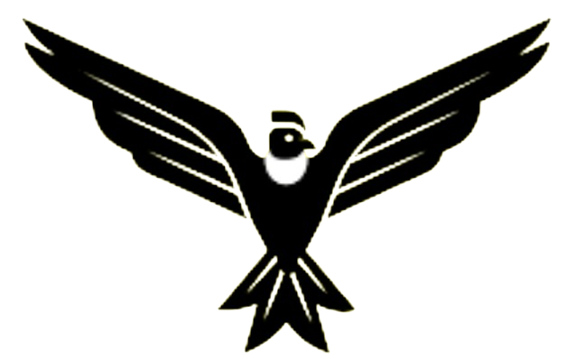
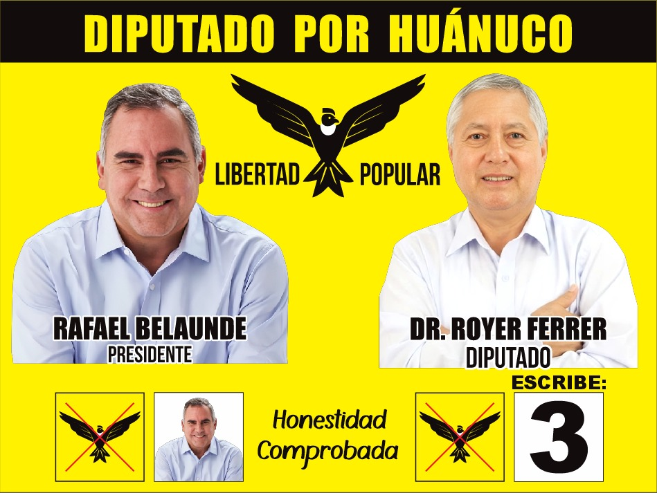

policy
Seguridad y Justicia
Reforma del sistema penal y mayor presupuesto para seguridad ciudadana en todas las provincias.

"Vota por el cambio, por un candidato honesto"
Contacto Directo
Contador Público de profesión y Catedrático de la UNAS, Royer Ferrer conoce la realidad de nuestra tierra desde sus raíces.
Su trayectoria académica y profesional está marcada por un firme compromiso con la transparencia y el desarrollo económico de Huánuco.
Como tu representante, luchará por una gestión pública eficiente que priorice a quienes más lo necesitan.

Reforma del sistema penal y mayor presupuesto para seguridad ciudadana en todas las provincias.
Protección real de nuestros recursos naturales, fuentes de agua y fomento de una agricultura sostenible.
Formalización ágil, cero burocracia y créditos accesibles para los emprendedores huanuqueños.
Infraestructura moderna, equipamiento tecnológico y atención médica digna garantizada.
Jubilación justa, pensión digna y programas de apoyo real y efectivo para el adulto mayor.
No te equivoques, asegura el futuro de Huánuco marcando correctamente la cartilla de votación.
MARCA EL CÓNDOR,
ESCRIBE EL 3
Cientos de ciudadanos se unieron para escuchar las propuestas de renovación y transparencia.
Royer Ferrer reafirma su compromiso con el campo huanuqueño y la sostenibilidad.
Sé parte de nuestro equipo de voluntarios en Huánuco.